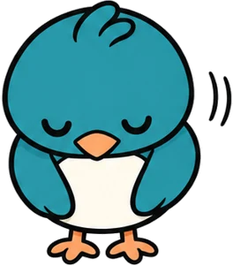

登記が終わってほっとする間もなく、売上の入金、備品の支払い、交通費の立替えが始まります。この時期に「お金の通り道」と「書類の置き場所」を決めておくかどうかで、半年後、決算のときの手間が大きく変わります。新宿で経理事務代行をしている株式会社オーバーフェンスが、設立1年目の会社に初回のご相談でお聞きしている項目をもとに、順番にまとめました。
この記事でわかること
- 設立後1か月の経理の準備を、やる順番で
- 会計ソフトで最初に決める3つの設定
- 月末にあわてない、領収書・請求書の置き方
ひと目でわかる、最初の1か月
目安の順番です。会社の状況で前後しても大丈夫です。
01会社のお金は、会社の口座に集める
入金も支払いも、会社名義の口座とカードに一本化するのが第一歩です。
まず、法人名義の銀行口座を用意します。開設には登記事項証明書などの書類が求められ、審査に時間がかかることもあります。早めに動くのが安心です。
- 売上の入金先を、法人口座に一本化する
- 会社の支払いに使うカードを、1枚に決める
社長個人の口座やカードで会社の支払いをすると、あとで「どれが会社の分か」を1件ずつ仕分けることになります。
立て替えたときは、領収書を残して、月に1回まとめて精算するルールに。記録がきれいにそろいます。
02会計ソフトは、最初の設定が肝心
最初に決める設定は3つ。うち2つは、あとから変えると過去の入力に響きます。
当社では、マネーフォワードクラウド会計で記帳をしています。会計ソフトを使い始めるときは、最初に次の点を設定します。
| 会社の事業年度 | 何月から何月までかあとで変えにくい |
|---|---|
| 消費税の扱い | 課税事業者か免税事業者か、税込・税抜のどちらで記帳するかあとで変えにくい税理士に確認 |
| 口座・カードとの連携 | 入出金の明細を自動で取り込む設定 |
ここは気をつけて消費税の扱いは会社ごとに条件が違います。自己判断せず、税理士に確認してから設定してください。
03領収書と請求書の「置き場所」を決める
後回しになりがちですが、3つに分けておくだけで月末の作業がかなり楽になります。
メールやPDFで受け取った請求書・領収書は、印刷して紙で残すだけでは足りず、データのまま保存する決まりがあります（電子帳簿保存法）。保存のしかたは会社の規模などで変わるため、税理士に確認しながら決めましょう。
04設立後の届出は、期限を確認しておく
届出には期限があります。設立日がわかった時点で一覧にしておくと安心です。
会社を設立すると、税務署や都税事務所（東京23区の場合）へ届け出る書類があります。たとえば法人設立届出書や、青色申告の承認申請書です。どちらも提出の期限が決まっています。
新宿区内でも、住所によって所轄の税務署が分かれます。提出先も含めて、届出は税理士がご案内します。
社会保険（健康保険・厚生年金）は、社長おひとりの会社でも、役員報酬を支払うと加入の手続きが要ります。社員を雇うときは、労働保険（労災保険・雇用保険）の手続きも加わります。どちらも期限が短いため、役員報酬を決めたとき・採用が決まったときに、早めにご相談ください。
05月に1回、「締めの日」を決める
たとえば「翌月10日までに、前の月の領収書と請求書をそろえる」というルールです。
締めの日を決めておくと、毎月の試算表（その月までの売上・経費・利益がわかる表）が早く出せるようになります。数字が毎月見えていれば、決算の直前にあわてることも減ります。
最後に、やることを6つにまとめました。ひとつずつチェックしてみてください。
最初の1か月でやること
- 法人口座を用意し、入金と支払いを会社の口座・カードに集める
- 会計ソフトの事業年度・消費税の設定を、税理士に確認して行う
- 口座・カードを会計ソフトに連携する
- 紙とデータの領収書・請求書の置き場所を決める
- 設立後の届出の期限を一覧にする
- 月に1回の締めの日を決める
スマホでスクリーンショットして、手元に置いておけます
ここまでを自分で全部やるのは大変、という方もいらっしゃいます。「設立したばかりで何もしていない」「領収書がもう溜まっている」という状態からでも大丈夫です。
ご相談は、初回30分無料です
記帳（マネーフォワードクラウド）・給与計算・経費精算・請求書発行・支払業務をお引き受けし、決算・法人税申告は、提携する久保田税務会計事務所（税理士 久保田英夫・世田谷区）が担当します。窓口はひとつです。
オンライン（Google Meet）でも、対面（新宿）でも。
無料相談のお問い合わせ